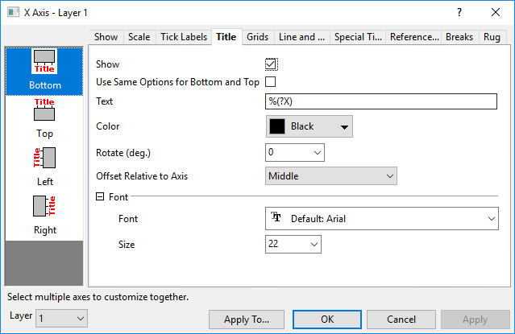

Die Registerkarte Titel
AxesRef-Title
Diese Registerkarte verfügt über Bedienelemente für Achsentitel, einschließlich Stil, Position etc. In 2D-Diagrammen können Sie die untere/obere (linke/rechte) Richtung getrennt voneinander benutzerdefiniert anpassen; in 3D-Diagrammen gibt es drei anzupassende Achsentitel (X, Y und Z).
|  |
| Achsentitel für die meisten 2D-Diagramme |
 |
- Bei Diagrammen mit mehreren Layern können Sie die Layerliste verwenden, um zwischen Layern in einem Diagramm mit mehreren Layern zu wechseln.

- Klicken Sie auf die Schaltfläche Anwenden auf... unten in diesem Dialog, um den Dialog Anwenden auf zu öffnen und das Achsenformat der Quellachse auf die Zielachse zu übertragen.
|
Zeigen
Der Titel wird für jede Dimension gezeigt.
Gleiche Optionen für Unten und Oben (Links und Rechts) verwenden
(Nur 2D-Diagramme) Aktivieren Sie dieses Kontrollkästchen, um die gleichen Titeloptionen für die obere und untere (linke und rechte) Achse zu verwenden. Wenn das Kontrollkästchen aktiviert ist, werden die Optionen Unten und Oben (Links und Rechts) geteilt. Sie müssen nur die untere und linke Achse benutzerdefiniert anpassen, und die Einstellungen werden auf die obere und rechte angewendet.
Text
Standardmäßig lautet der Achsentitel %(?X), %(?Y) oder %(?Z). Dies wird übersetzt mit "Langname (ansonsten Kurzname) + Einheit" der X-, Y- oder Z-Spalte eines festgelegten Zeichnungsindexes. Dieser Zeichnungindex ist im Allgemeinen 1 (d. h. die erste Zeichnung im Layer), aber es können auch andere Zeichnungsindizes mit dem Listenfeld Details Zeichnung: Legenden/Titel: Index der Zeichnungen in autom. Achsentiteln festgelegt werden.
Achsentitel können mit Hilfe einer Kombination der Informationen in der Spaltenbeschriftungszeile im Arbeitsblatt erzeugt werden. Um beispielsweise die Daten des ersten benutzerdefinierten Parameters in der X-Spalte zu verwenden, würden Sie %(?X, @LD) eingeben. Um den Langnamen und die Daten des ersten benutzerdefinierten Parameters zu kombinieren, können Sie %(?X, @(@LL (@LD))) verwenden. In der vollständigen Liste der @Optionen können Sie Einzelheiten nachlesen.
Auch wenn es häufig vorzuziehen ist, wie oben Variablenotationen zu verwenden -- insbesondere beim Speichern Ihrer Anpassungen in einer Vorlagendatei --, können Sie einfach Ihren Achsentiteltext (a) in dieses Textfeld oder (b) direkt in das Achsentitelobjekt auf der Diagrammseite eingeben.
|
Sie können einen Hex-Wert mit 4 Zeichen (Unicode) direkt in dieses Feld eingeben, dann ALT + X drücken, um das Zeichen in den Achsentitel einzufügen (z. B. Klammer öffnen, 03B8 in das Feld nach der Zeichenkette %(?X) eingeben, ALT+X drücken (fügt Zeichen ein, dann Klammer schließen. Ein Achsentitel wird erstellt, der Langname/Kurzname der X-Spalte mit dem Symbol θ in Klammern kombiniert).
|
Informationen zur Steuerung der Anzeige von Einheiten siehe Einheitsanzeige für Achsentitel.
Farbe
Wählen Sie aus dieser Auswahlliste eine Farbe für den Titeltext aus.
Hinweis: Sie können die Farbe der Achsentitel auch so anpassen, dass sie der Zeichnung entsprechen. Dazu klicken Sie mit der rechten Maustaste auf den Achsentitel, um Textfarbe folgt Zeichnung auszuwählen. Sie müssen den Ersatz des Achsentitels prüfen, um zu erfahren, welcher Zeichnungsfarbe gefolgt wird.
Drehen
Origin unterstützt die beliebige Drehung der Titel. Wählen Sie oder geben Sie einen positiven Wert in dieses Textfeld ein, um den Titel gegen den Uhrzeigersinn zu drehen, bzw. einen negativen Wert, um den Titel im Uhrzeigersinn zu drehen.
Versatz relativ zur Achse (nur 2D-Diagramme)
Legen Sie die Position des Achsentitels entlang der Achse fest. Optionen schließen ein: Beginn ab Achsenanfang, Ende am Achsenanfang, Mitte, Ende am Achsenende und Beginn ab Achsenende.
Hinweis: Sie können den Befehl page.ytitle= verwenden, um den Versatz des Achsentitels für alle Layer basierend auf dem Achsenrahmen anzupassen. page.ytitle = 15 bedeutet 15 % (Breite des Layerrahmens) vom Layerrahmen.
Schriftart
Schriftart
Wählen Sie die Titelschriftart in der Auswahlliste aus.
Größe
Legen Sie die Größe des Achsentitels in dem Auswahlfeld fest.
Versatz in % der Punktgröße (nur 3D-Diagramme)
Horizontal
Der Titel wird aus seiner Standardposition verschoben. Geben Sie im Textfeld einen “Prozent der Achsenlänge”-Wert ein. Ein positiver Wert, um den Abstand zwischen Titel und Achse zu vergrößern; ein negativer Wert, um den Abstand zwischen Titel und Achse zu verkleinern.
Vertikal
Der Titel wird aus seiner Standardposition verschoben. Geben Sie im Textfeld einen “Prozent der Achsenlänge”-Wert ein. Ein positiver Wert, um den Titel die Achse entlang in positive Richtung zu verschieben; ein negativer Wert, um den Titel entlang der Achse in negativer Richtung zu verschieben.